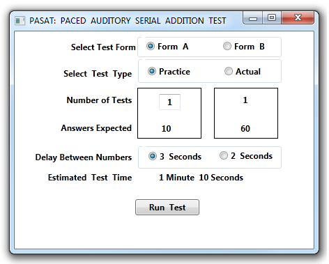
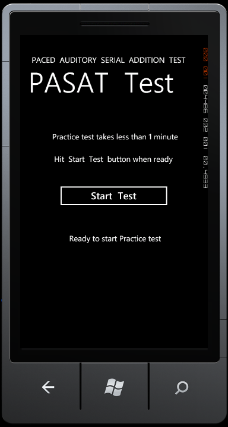
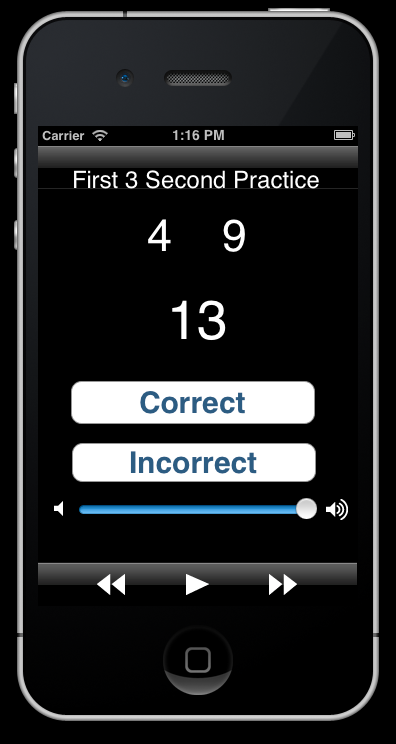

PASAT
Paced
Auditory Serial Addition Test
Downloads:
Just enter the full string exactly as shown in your browser to get a given archive:
To view this file:
http://members.cox.net/stealthnet/
EXE file for Windows PC
http://members.cox.net/stealthnet/PASATTest.exe
Make sure to have a Resources directory in the same directory as where you put the EXE.
The Resources directory is from the source zip file and holds 9 .WAV files
Source archive for Windows PC (in C#)
http://members.cox.net/stealthnet/PASATTest.zip
Windows Phone 7 has run OK on Emulator but NOT tested on real device
It now also requires a device with 7.1 support installed which means very recent devices.
It will be changed to only require 7.0 support very soon now...
Source archive for Windows Phone 7 (in C#)
http://members.cox.net/stealthnet/PASATTest_WP7.zip
Instructions for iPhone install:
Anyone interested in running PASAT for the iPhone should send an email to russell.parris@gmail.com with your contact email that you check from the iPhone.
You will receive an email from Test Flight App with the sender being TestFlight.
Open the invitation email from your iPhone and accept the invitation to join PASAT.
Once you have responded to the emails, then your device identifier will be matched to the PASAT iPhone app.
A new build will be
generated on my end and then a version of the app paired to your device
will be sent to you via TestFlightApp.
Press the green Install 'button in the body of the email and the app will begin the process of downloading to your device.
iPhone Known Bugs:
Work around issue be sure to press the pause button control before closing the app using the Home button on your iPhone.
This will ensure that the audio stops playing when the app is in the background.
You might have to do this twice to get the pause to work.
Source archive for iPhone (in Objective C will be available later)
Mono C# port is under development and first version is expected early December
Source archive for Android (in Java)
later (December maybe)?
Source Forge project pages (under construction)
https://sourceforge.net/projects/pasattest/
Background:
This test originated in the 70's and is used to evaluate people that have had problems with:
concussions
multiple sclerosis
post traumatic stress disorder
The test is done by playing a prerecorded (or computer generated in this case) sequence of small numbers.
After the person taking the test hears the second number they would mentally add the first and second and say aloud the sum.
This is the general idea: there are more details in the documentation for exactly how to give the test.
So the person taking the test is using his/her
hearing and recognition of the spoken number
memory (concentration) of the previous number
math skills to silently add the 2 numbers
verbal skills to say aloud the sum
Tests are done with a time interval between the 2 numbers.
The documentation specified 3 seconds or else 2 seconds.
Other documentation not referenced here uses other numerical values and other time intervals.
John Byrne came up with the idea to make a software program to give the test instead of
using prerecorded cassette tapes (70's style) or CDs as is done now by the U.S. Government.
Where to get free documentation or order CDs:
Documentation link is near the middle on the left
http://www.pasat.us/
Multiple Sclerosis site
http://www.nationalmssociety.org/for-professionals/researchers/clinical-study-measures/pasat/index.aspx
Contributors and Supported Platforms:
John Byrne for initial concept and research and early Windows PC prototype
Russell Parris for the iPhone/iPad platforms
Randy Maxwell for the Windows Phone 7 platform, Mono C# port & some improvements to Windows PC
Mono C# port is currently under development and should be available early December
Android platform is currently lower priority until we get farther along on the ones above.
THANK YOU:
First to veterans past and present around the world for defending us from tyranny and barbarism.
Second to the folks at Linkedin for sponsoring the Veteran Hackday 2011
event that brought John, Russell and Randy together to work on PASAT
and many other development teams to work on many other projects to
benefit veterans.
Below are some screen shots (these will very likely change)
Windows PC starting screen

Windows Phone 7 before test


iPhone during test
Problems?
Email: Randy Maxwell rkmax@pcez.com (former Navy EW2)
created on Veteran's Day: Friday November 11, 2011
revised: Monday November 19, 2011 3 AM PST